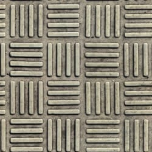
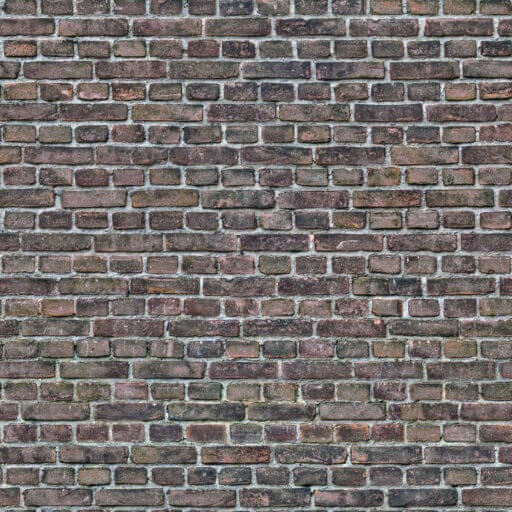

<!--
FileName:       index.html
Programmers:    Dan Cliburn, Chris Ciobanu, Dean Shin, Chris Scrosati
Date:           11/17/2022
Purpose:		This file defines the html code necessary to run our WebGL 2 program.

We created a first person shooting gallery for the extra credit.
The user can walk around the scene with the WASD or arrow keys, and use their mouse to look around the environment.
This game has 30 targets that can be shot down by the player--in order to win, the player must shoot down at least 25 of them.
Additionally, other features such as aiming down sights on the gun, full screen mode, pointer locking, gimbal locking etc. are supported.
-->

<!-- Load image files -->




<!-- The "hidden" tag keeps the html page from displaying the images on the page itself. We
     want to access the images in our JavaScript code and not have them displayed on the page.
     Also note that for this to work you must be running a local web server.
-->

<html>

<head>
    <title>Assignment 7</title>

    <link rel="stylesheet" href="./styles.css" />

    <!-- Load the javascript files used in the program-->
    <script src="game.js" defer></script>
    <script src="model.js" defer></script>
    <script src="view.js" defer></script>
    <script src="controller.js" defer></script>
    <script src="room.js" defer></script>
    <script src="texsquare.js" defer></script>
    <script src="gun.js" defer></script>
    <script src="bullet.js" defer></script>

    <!-- Load the gl-matrix.js file to do matrix operations. See: glmatrix.net -->
    <script src="gl-matrix.js" defer></script>

    <!-- Define the vertex and fragment shaders -->
    <script id="phong-tex-vertex-shader" type="shader.vert">
        #version 300 es //specifies that we want OpenGL ES 3.0
        //This vertex shader is based on Example 7.8 on pages 377 and 378 of the OpenGL Programming
        //Guide (8th edition) with some tweaks to support shininess as a vertex property. I also
        //modified the code somewhat to make it closer to the Phong Reflection Model discussed in class.
        //For lab 7 it was modified to allow the eye position to move around the scene. Lighting
        //calculations are done in "eye" coordinates, so position and normal must be calculated appropriately.

        layout(location = 0) in vec4 vertexPosition;
        layout(location = 1) in vec4 vertexColor;
        layout(location = 2) in vec3 vertexNormal;
        layout(location = 3) in float vertexShininess;
        layout(location = 4) in vec2 in_tex_coord; //texture coodinates are now being passed in as vertex attributes

        uniform mat4 modelMatrix;
        uniform mat4 viewMatrix;
        uniform mat4 projectionMatrix;

        out vec4 position; //position of the vertex in "eye" coordinates
        out vec4 color;
        out vec3 normal; //orientation of the normal in "eye" coordinates
        out float shininess;
        out vec2 vs_tex_coord; //out variable so that texture coordinates can be made available to the fragment shader

        void main()
        {
            //Assign the in variables (attributes) to out variables (varyings) so that
            //they can be accessed in the fragment shader for lighting calculations.
	        position = viewMatrix * modelMatrix * vertexPosition; //position in "eye" coordinates
	        color = vertexColor;
            //calculate the "normal matrix"
            mat4 modelViewMatrix = viewMatrix * modelMatrix;
            mat4 normalMatrix = transpose(inverse(modelViewMatrix));
            vec4 n = normalMatrix * vec4(vertexNormal, 0.0);
            normal = normalize(vec3(n.x, n.y, n.z)); //normalize just in case it is not a unit vector
	        shininess = vertexShininess;
            vs_tex_coord = in_tex_coord; //copy the texture coordinate passed into this shader to an out variable

            //Here the input vertexPosition is multiplied by the model, view, and
            //projection matrices to determine the final position of the vertex 
            gl_Position = projectionMatrix * viewMatrix * modelMatrix * vertexPosition;
        }
    </script>
    <script id="phong-tex-fragment-shader" type="shader.frag">
        #version 300 es //specifies that we want OpenGL ES 3.0
        precision highp float; //specifies "high precision" - necessary to access the viewMatrix here
        //This fragment shader blends the active texture with the fragment's color before lighting 
        //calculations are performed. For Lab 10 calculations for light attenuation have been removed. 

        //uniform variables
        uniform vec3 globalAmbientLight;
        uniform mat4 viewMatrix; //needed to transform the light positions into "eye" coordinates
        uniform vec4 light_color; //color of light
        uniform vec4 light_position; //location of light if w = 1, otherwise the direction towards the light
        uniform sampler2D tex_image; //Support for texture mapping

        in vec4 position; //position of the fragment in "eye" coordinates
        in vec4 color; //surface color at the fragment
        in vec3 normal; //normal vector at the fragment in "eye" coordinates
        in float shininess; //shininess of the surface at the fragment
        in vec2 vs_tex_coord;

        out vec4 frag_color; //resulting fragment color after lighting is applied

        void main()
        {
	        //Implement the Phong reflectance model
	        //initialize scatteredLight to the global ambience * fragment color
	        vec3 scatteredLight = globalAmbientLight*texture(tex_image, vs_tex_coord).rgb*color.rgb;
	        vec3 reflectedLight = vec3(0.0, 0.0, 0.0);
	        vec3 surfaceSpecularColor = vec3(1.0, 1.0, 1.0); //normally we want the specular color of the  
		    //surface to be white so that the color of the specular highlight is the color of the light.  
            //If we do not want specular highlights at all you can set this to black (0.0, 0.0, 0.0).
                                                    	
	        vec3 I = light_color.rgb;  //Intensity (color) of the light
	        vec3 L; //this will be the L vector in the Phong reflectance model
            vec4 lightPos_eyeCoords = viewMatrix*light_position; //put light_position in "eye" coordinates
            vec3 surfaceDiffuseColor = texture(tex_image, vs_tex_coord).rgb*color.rgb;
	        float f = 1.0; //Not light attenuation will be a calculated in this shader
				
	        if (light_position.w > 0.1) //a positional light
	        {
		        vec4 LTemp = lightPos_eyeCoords - position;  //Calculate the L vector
		        L = vec3(LTemp.x, LTemp.y, LTemp.z); //remove the w value from the L vector
		        float d = length(L); //d in the phong reflectance model
			    L = L / d; //normalize L
		    }
		    else //a directional light
	        {
                //remove w value to form the L vector and normalize
                L = normalize(vec3(lightPos_eyeCoords.x, lightPos_eyeCoords.y, lightPos_eyeCoords.z));
		    }

	        float diffuseModifier = max ( 0.0, dot(normalize(normal), L) );
		    float specularModifier;
	        if (diffuseModifier > 0.001) //light is shining directly on the object so there may be a specular highlight
            {
		        //Find the reflectance vector, r, and the vector towards the viewer, v
			    vec3 r = normalize( reflect (-L, normal) ); //find r by "reflecting" L about n
		        vec4 viewerPos = vec4(0.0, 0.0, 0.0, 1.0); //The viewer is at (0,0,0) in "eye" coordinates
			    vec4 vTemp = viewerPos - position;
			    vec3 v = normalize(vec3(vTemp.x, vTemp.y, vTemp.z)); //calculate v, the vector towards the viewer 
			    specularModifier = pow (max ( 0.0, dot(r, v)), shininess );
		    }
		    else //no specular highlight, light is probably behind the surface
		    {
		        specularModifier = 0.0;
		    }

		    //Accumulate all the light's effects
		    reflectedLight += f *		                                                //attenuation
							     (  (I * surfaceDiffuseColor * diffuseModifier) +		//diffuse term
							        (I * surfaceSpecularColor * specularModifier) );	//specular term

	        vec3 sumOfLights = scatteredLight + reflectedLight;
	        vec3 rgb = min ( sumOfLights, vec3(1.0, 1.0, 1.0) ); //clamp lighting at all white
            vec4 fcolor = vec4(rgb.r, rgb.g, rgb.b, color.a); //use the fragment's original alpha
            frag_color = fcolor;
        }
    </script>
    <script id="point-sprite-vertex-shader" type="shader.vert">
        #version 300 es
        precision mediump float;
        //See the section of the textbook titled "Point Sprites" for a discussion of point sprites
         
        layout(location = 0) in vec4 vertexPosition;

        //uniform variables
        uniform mat4 modelMatrix;
        uniform mat4 viewMatrix;
        uniform mat4 projectionMatrix;
     
        void main(void) 
        {  
            vec4 pos = projectionMatrix * viewMatrix * modelMatrix * vec4(vertexPosition.x, vertexPosition.y, vertexPosition.z, 1.0);
            gl_PointSize = (1.0 - pos.z / pos.w) * 5000.0; //set gl_PointSize for point sprites as a function of the distance from viewer
            gl_Position = pos;
        }
    </script>
    <script id="point-sprite-fragment-shader" type="shader.frag">
        #version 300 es //specifies that we want OpenGL ES 3.0
        precision highp float; //specifies "high precision"
        //See the section of the textbook titled "Point Sprites" for a discussion of point sprites

        uniform sampler2D tex_image; //Support for texture mapping

        out vec4 frag_color; //resulting fragment color after the point sprite texture is applied

        void main()
        {
            float threshold = 0.15;
            vec4 color = texture(tex_image, gl_PointCoord);
            frag_color = color;
            if (color.r <= threshold && color.g <= threshold && color.b <= threshold)
                discard; //pretend this fragment doesn't exist (i.e. make it transparent)
        }
    </script>
    <script id="fog-vertex-shader" type="shader.vert">
        #version 300 es //specifies that we want OpenGL ES 3.0
        //This vertex shader is based on Example 7.8 on pages 377 and 378 of the OpenGL Programming Guide (8th edition)
        //I modified the code somewhat to make it closer to the Phong Reflection Model discussed in COMP 153.
        //For lab 7 it was modified to allow the eye position to move around the scene. Lighting calculations 
        //are done in "eye" coordinates, so position and normal must be calculated appropriately.

        layout(location = 0) in vec4 vertexPosition;
        layout(location = 1) in vec4 vertexColor;
        layout(location = 2) in vec3 vertexNormal;

        uniform mat4 modelMatrix;
        uniform mat4 viewMatrix;
        uniform mat4 projectionMatrix;

        out vec4 position; //position of the vertex in "eye" coordinates
        out vec4 color;
        out vec3 normal; //orientation of the normal in "eye" coordinates

        void main()
        {
            //Assign the in variables (attributes) to out variables (varyings) so that
            //they can be accessed in the fragment shader for lighting calculations.
            position = viewMatrix * modelMatrix * vertexPosition; //position in "eye" coordinates
            color = vertexColor;
            //calculate the "normal matrix"
            mat4 modelViewMatrix = viewMatrix * modelMatrix;
            mat4 normalMatrix = transpose(inverse(modelViewMatrix));
            vec4 n = normalMatrix * vec4(vertexNormal, 0.0);
            normal = normalize(vec3(n.x, n.y, n.z)); //normalize just in case it is not a unit vector

            //Here the input vertexPostion is multiplied by the model, view, and
            //projection matrices to determine the final position of the vertex
            gl_Position = projectionMatrix * viewMatrix * modelMatrix * vertexPosition;
        }
    </script>
    <script id="fog-fragment-shader" type="shader.frag">
        #version 300 es //specifies that we want OpenGL ES 3.0
        precision highp float; //specifies "high precision" - necessary to access the viewMatrix here
        //The toon shader part of this code is adapted from: 
        // www.lighthouse3d.com/tutorials/glsl-tutorial/toon-shading-version-iii/

        //uniform variables
        uniform vec3 globalAmbientLight;
        uniform mat4 viewMatrix; //needed to transform the light positions into "eye" coordinates
        uniform vec4 light_color; //color of light
        uniform vec4 light_position; //location of light if w = 1, otherwise the direction towards the light
        uniform vec4 fogColor;

        in vec4 position; //position of the fragment in "eye" coordinates
        in vec4 color; //surface color at the fragment
        in vec3 normal; //normal vector at the fragment in "eye" coordinates

        out vec4 frag_color; //resulting fragment color after lighting is applied

        void main()
        {
            //Implement a toon shader for lighting
            vec3 colorSum = vec3(0.0, 0.0, 0.0);
            vec3 n = normalize(normal);
            vec3 L; //this will be the vector towards the light
            vec3 I = light_color.rgb;  //Intensity (color) of the light
            vec4 lightPos_eyeCoords = viewMatrix*light_position; //put light_position in "eye" coordinates

            if (light_position.w > 0.1) //a positional light
            {
                vec4 LTemp = lightPos_eyeCoords - position;  //Calculate the L vector
                L = normalize(vec3(LTemp.x, LTemp.y, LTemp.z)); //remove the w value from the L vector and normalize
            }
            else //a directional light
            {
                //remove w value to form the L vector and normalize
                L = normalize(vec3(lightPos_eyeCoords.x, lightPos_eyeCoords.y, lightPos_eyeCoords.z));
            }

            float intensity = dot(L,n);
            if (intensity > 0.95)
                colorSum += color.rgb * I * 1.0;
            else if (intensity > .75)
                colorSum += color.rgb * I * 0.75;
            else if (intensity > .5)
                colorSum += color.rgb * I * 0.5;
            else if (intensity > 0.25)
                colorSum += color.rgb * I * 0.25;
            else
                colorSum += color.rgb * I * 0.05;

            colorSum = colorSum + globalAmbientLight*color.rgb;  //compute the final color of the fragment
            float distance = (1.0 - position.z / position.w);
            vec4 finalColor = mix(vec4(colorSum.r, colorSum.g, colorSum.b, color.a), fogColor, distance / 25.0);
            frag_color = finalColor;
        }
    </script>
    <script id="ui-vertex-shader" type="shader.vert">
        #version 300 es //specifies that we want OpenGL ES 3.0
  
        layout (location = 0) in vec4 vPosition;
  
        void main()
        {
            gl_Position = vec4(vPosition.x, vPosition.y, 0.0, 1.0);
            gl_PointSize = 200.0;
        }
    </script>
    <script id="ui-fragment-shader" type="shader.frag">
        #version 300 es //specifies that we want OpenGL ES 3.0
        precision mediump float;  //specifies "medium precision"
  
        uniform sampler2D tex_image; //Support for texture mapping

        out vec4 frag_color; //this will be the fragment's color
  
        void main()
        {
            vec4 color = texture(tex_image, gl_PointCoord);
            frag_color = color;
        }
    </script>

    <!-- Call our controller function from main once the document has loaded -->
    <script type="text/javascript">
        function main() {
            controller(); //controller is defined in controller.js
        }
        window.onload = main; 
    </script>
</head>

<body>
    <div id="screen">
        <canvas id="webgl-canvas" width="1280" height="720">
            Your browser does not support the HTML5 canvas element.
        </canvas>
        <h1>Targets hit: <span id="score">0</span>/30</h1>
    </div>

</body>

</html>